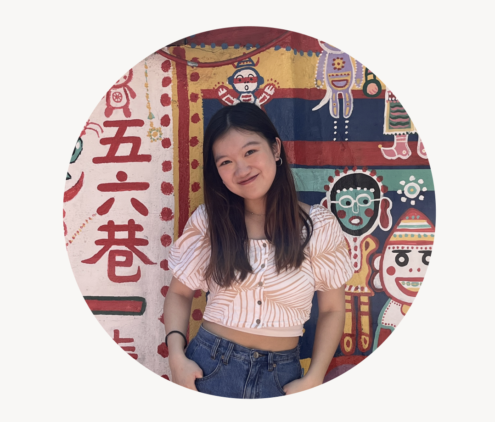
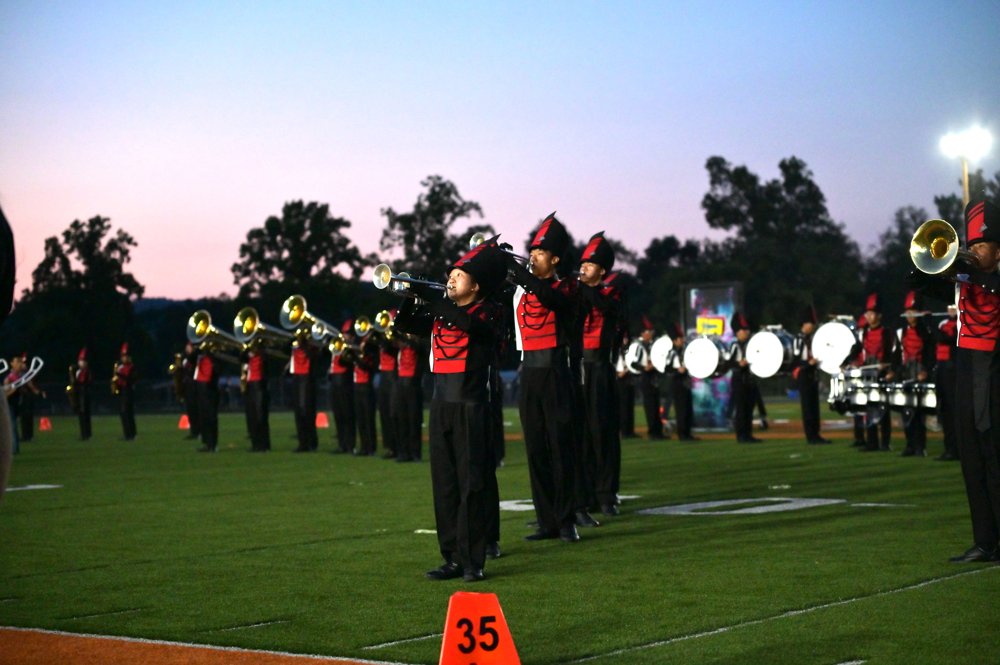
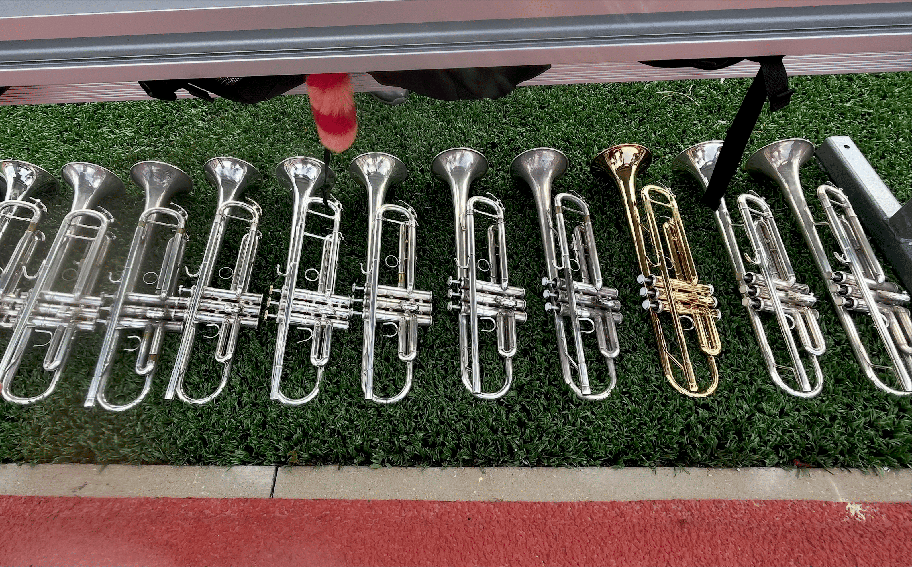
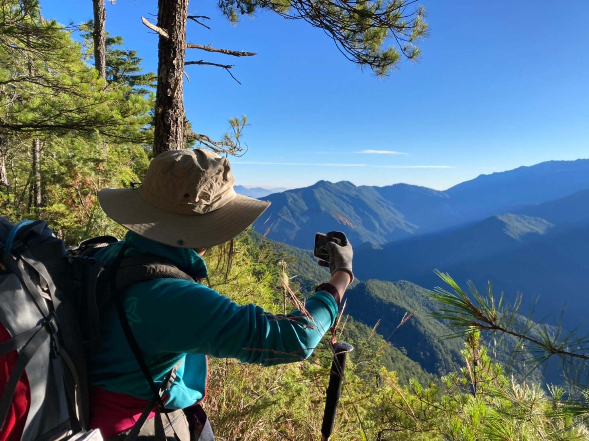

Master’s in Human–Computer Interaction in Espoo, Finland.
I participated in this student-led extracurricular workshop on human–computer interaction in Taiwan, designing a project on "cross-device attention" with students from different backgrounds.
I worked as a Vision Intelligence intern at the Industrial Technology Research Institute, Taiwan’s leading national institute for applied industrial R&D, using imitation learning to train a robotic cooking assistant.
I worked as a software quality assurance intern at AsiaYo, an online travel agency offering hotel booking across Asia. Our team focused on API test automation to ensure feature quality and a consistent user experience.
Bachelor in Computer Science and the Innovative Design Program, a seven-course program including "User-Centered Design", "Introduction to Psychology", and "Sketching for Product Design".
I built my foundation in computer science and web programming through Harvard University’s online courses, covering topics such as data structures, SQL, and HTML, CSS, and JS.

Being part of a marching band taught me how individual actions come together to create a shared experience. Through long rehearsals and performances, I learned the importance of pushing through challenges, adapting to unexpected situations. More than anything, it showed me that teamwork is built on trust and communication, listening to others, adjusting myself, and moving forward together.

As a trumpet player for over ten years, performing in front of audiences strengthened my self-confidence and stage presence, while teaching me how to channel nervous energy and pressure into focus. Continuous practice pushed me to keep improving as an individual, always seeking toward perfection. Music also serves as a personal form of creative expression, allowing me to communicate emotions and ideas beyond words.

Travel allows me to experience new environments and meet people from different backgrounds, deepening my appreciation for diverse cultures and landscapes while gaining fresh perspectives. Video editing complements this by letting me document my life through visual storytelling, helping me refine my sense of design, narrative, and attention to detail.